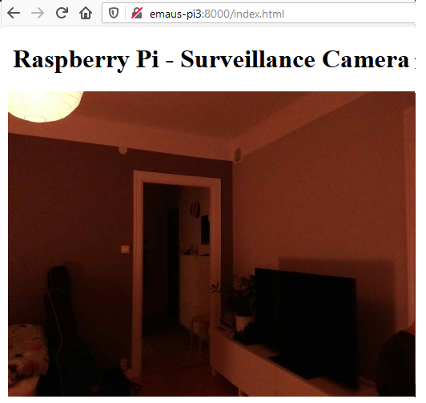
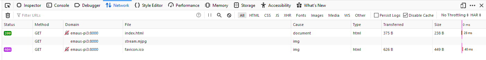
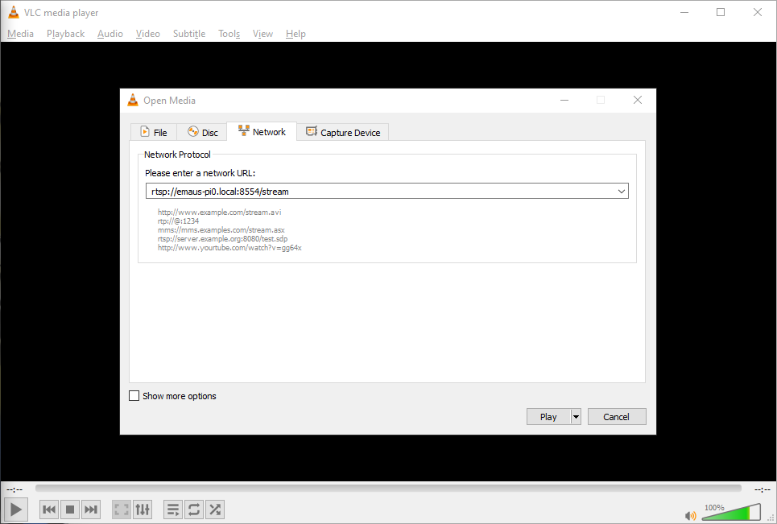
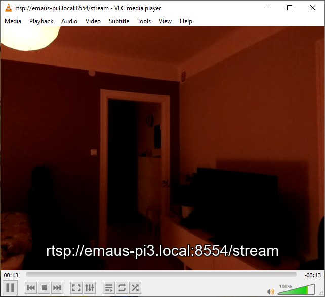
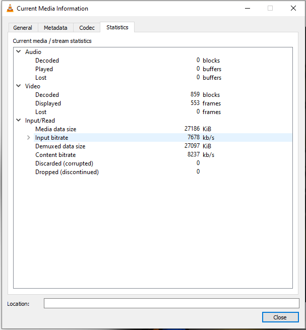

In this guide, I will go through two ways to stream video from a Raspberry Pi.
First using the picamera library in Python, and then using the raspivid tool and VLC directly in the shell.
Published: 2020-05-30
Last updated: 2020-06-07 12:58
The bulk of the code is taken from random nerd tutorials: Video Streaming with Raspberry Pi Camera.
You need to install the Python package for accessing the Pi camera.
pip install picamera
# surv.py
# Web streaming example
# Source code from the official PiCamera package
# http://picamera.readthedocs.io/en/latest/recipes2.html#web-streaming
import io
import picamera
import logging
import socketserver
from threading import Condition
from http import server
import argparse
parser = argparse.ArgumentParser()
parser.add_argument("--size", nargs=2, type=int, default=(640, 480), help="Size of captured images")
parser.add_argument("--frame-rate", "-r", type=int, default=30, help="Frame rate of camera capture")
parser.add_argument("--port", "-p", type=int, default=8000, help="Port to serve website on")
parser.add_argument("--rotation", type=int, default=180, help="Rotation of camera")
args = parser.parse_args()
width = args.size[0]
height = args.size[1]
PAGE=f"""
<html>
<head>
<title>Raspberry Pi - Surveillance Camera</title>
</head>
<body>
<center><h1>Raspberry Pi - Surveillance Camera</h1></center>
<center><img src="stream.mjpg" style="max-width: 1024px; width: 100%;"></center>
</body>
</html>
"""
class StreamingOutput(object):
def __init__(self):
self.frame = None
self.buffer = io.BytesIO()
self.condition = Condition()
def write(self, buf):
if buf.startswith(b'\xff\xd8'):
# New frame, copy the existing buffer's content and notify all
# clients it's available
self.buffer.truncate()
with self.condition:
self.frame = self.buffer.getvalue()
self.condition.notify_all()
self.buffer.seek(0)
return self.buffer.write(buf)
class StreamingHandler(server.BaseHTTPRequestHandler):
def do_GET(self):
if self.path == '/':
self.send_response(301)
self.send_header('Location', '/index.html')
self.end_headers()
elif self.path == '/index.html':
content = PAGE.encode('utf-8')
self.send_response(200)
self.send_header('Content-Type', 'text/html')
self.send_header('Content-Length', len(content))
self.end_headers()
self.wfile.write(content)
elif self.path == '/stream.mjpg':
self.send_response(200)
self.send_header('Age', 0)
self.send_header('Cache-Control', 'no-cache, private')
self.send_header('Pragma', 'no-cache')
self.send_header('Content-Type', 'multipart/x-mixed-replace; boundary=FRAME')
self.end_headers()
try:
while True:
with output.condition:
output.condition.wait()
frame = output.frame
self.wfile.write(b'--FRAME\r\n')
self.send_header('Content-Type', 'image/jpeg')
self.send_header('Content-Length', len(frame))
self.end_headers()
self.wfile.write(frame)
self.wfile.write(b'\r\n')
except Exception as e:
logging.warning(
'Removed streaming client %s: %s',
self.client_address, str(e))
else:
self.send_error(404)
self.end_headers()
class StreamingServer(socketserver.ThreadingMixIn, server.HTTPServer):
allow_reuse_address = True
daemon_threads = True
with picamera.PiCamera(resolution=f'{width}x{height}', framerate=args.frame_rate) as camera:
output = StreamingOutput()
camera.rotation = args.rotation
camera.start_recording(output, format='mjpeg')
try:
address = ('', args.port)
server = StreamingServer(address, StreamingHandler)
server.serve_forever()
finally:
camera.stop_recording()
$ python surv.py --help
usage: surv.py [-h] [--size SIZE SIZE] [--frame-rate FRAME_RATE] [--port PORT]
[--rotation ROTATION]
optional arguments:
-h, --help show this help message and exit
--size SIZE SIZE Size of captured images
--frame-rate FRAME_RATE, -r FRAME_RATE
Frame rate of camera capture
--port PORT, -p PORT Port to serve website on
--rotation ROTATION Rotation of camera
$ python surv.py
Before changing video settings, make sure to Picamera’s page on sensor modes. There are some connections between frame rate and resolution which would take time to figure out empirically. This was important for me, because I wanted the native aspect ratio and as high frame rate as possible.
Here is an excerpt for the V2 camera module with the settings I preferred:
| # | Resolution | Aspect Ratio | Framerates | Video | Image | FoV | Binning |
|---|---|---|---|---|---|---|---|
| 4 | 1640x1232 | 4:3 | 1/10 <= fps <= 40 | x | Full | 2x2 |
And the corresponding invocation:
$ python surv.py --size 1640 1232 --frame-rate 40 --rotation 180 -p 8000
Using your favorite web browser, you can then go to the IP address (or hostname if you have the luxury of mDNS) of the server:

I was quite astonished at the low latency of the stream! It is well under a second. Awesome! 🎉
I thought it would be possible to monitor the network traffic using the built-in developer tools in Firefox (accessed by pressing F12). However, the network logger does not update its stats until after an “image” has been downloaded completely. So we will only be able to get the statistics when the stream has ended. This is what is looks like while it is streaming:

VLC can be used from the command line to stream video with RTP (Real-Time Protocol) through RTMP (Real-Time Messaging Protocol). It’s quite neat. 😊
There are several example on how to use this. See for example Chis Carey’s blog, and Sammit.
raspivid should already be installed, so you only need to install VLC.
apt install vlc
raspivid has a bunch of flags that can be used for tweaking its output. It can rotate the video, apply video filters, change stream settings etc. Use raspivid 2>&1 | less for viewing its help with a pager.
To set up an H264 video stream, use the following command:
$ raspivid -rot 180 -t 0 -fps 20 -w 640 -h 480 -o - |
cvlc -vvv stream:///dev/stdin --sout '#rtp{access=udp,sdp=rtsp://:8554/stream}' :demux=h264
raspivid flags
raspivid is -t 0, which makes the stream continue forever. Otherwise it would stop almost immediately.-g 100.-b. E.g. -b 200000 for setting it to 200 kb/s.-fps-flag. Note however that this increases the bandwidth, and possibly also the latency.I didn’t notice much change in latency when playing around with the settings. It was quite constant around 2-4 seconds depending on when the stream was started. Except for possibly when increasing the framerate.
VLC can also be used for setting up a Motion-JPEG stream using the following flags:
$ raspivid -cd MJPEG -rot 180 -t 0 -fps 20 -w 640 -h 480 -o - |
cvlc -vvv stream:///dev/stdin --sout '#rtp{access=udp,sdp=rtsp://:8554/stream}' :demux=mjpeg
Open the stream in VLC by going to Media ➥ Open Network Stream… (Ctrl + N):


The latency of this stream is way higher than the picamera stream. For me it is at least 2 seconds, and can go up to around 6 seconds.
You can monitor the actual bitrate of the stream in VLC by going to Tools ➥ Media information (Ctrl + I), and then switching to the Statistics tab. This can be useful while tweaking the raspivid settings:
